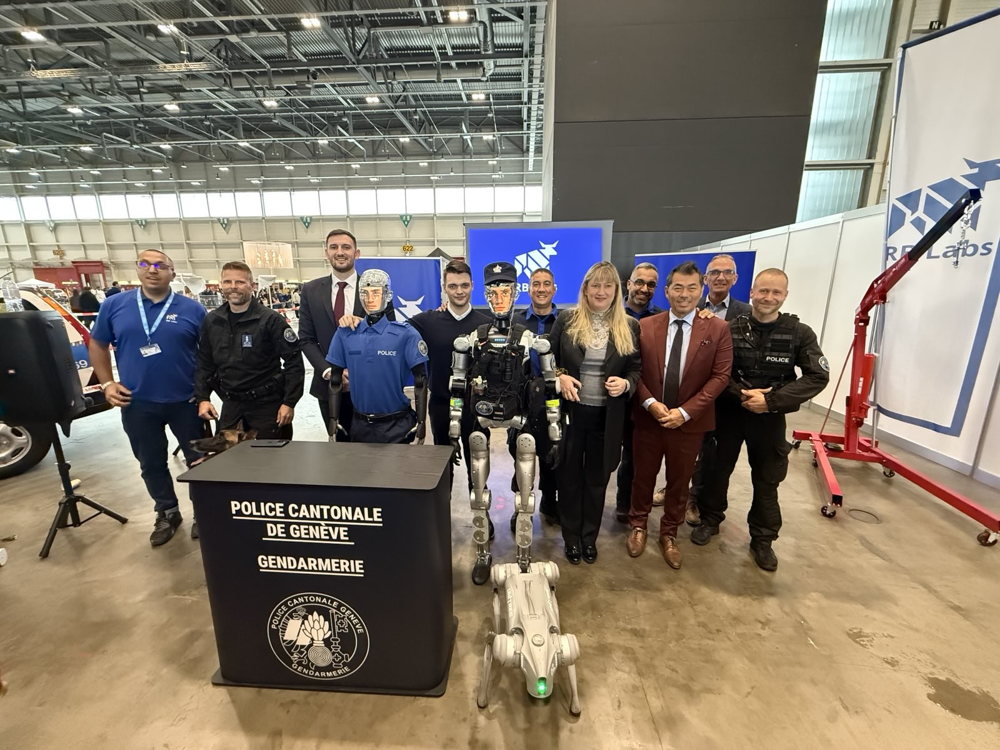
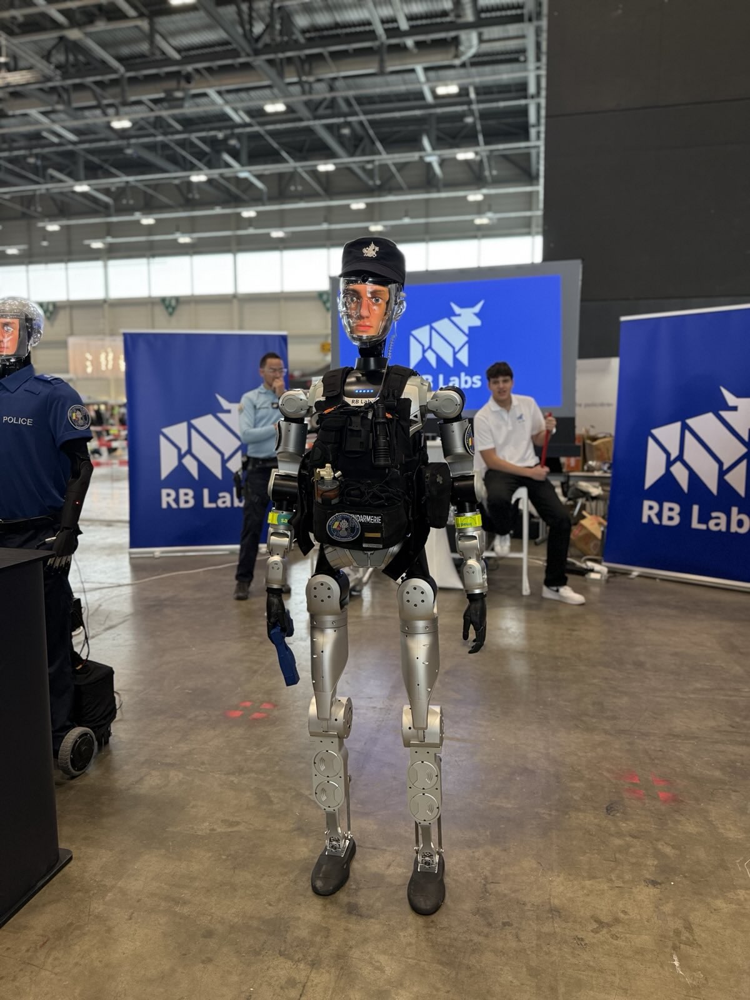

On October 11, 2025, Palexpo Geneva's Hall 6 hosted Switzerland's largest Police Day ("Journée de la police"), welcoming over 8,236 visitors to experience the future of public safety. Among the most talked-about attractions was RB Labs' presentation of Robert the Robot in his new role as an AI-powered police officer. Spanning 27,000 m² of exhibition space and featuring more than 50 partner organizations, the event themed "the galaxy of blue lights" became the perfect stage to unveil how artificial intelligence is transforming law enforcement.
Switzerland's Largest Police Day: An Unprecedented Event
The Police Day 2025 at Palexpo was a massive public outreach event designed to showcase the multiple facets of emergency service professions. Families, students, and security professionals gathered to participate in interactive activities and witness spectacular demonstrations by police, fire, and emergency services.
The event featured an official certified fitness test where 205 participants challenged themselves to meet police physical standards, with 141 (69%) successfully passing. This interactive element highlighted the demanding physical requirements of law enforcement work and the importance of technological support—exactly where Robert the Robot comes in.
Robert's Demonstration: Captivating Thousands
At the RB Labs booth, Robert captivated visitors with live demonstrations of his law enforcement capabilities. Police officials, families, and technology enthusiasts witnessed firsthand how Robert's advanced AI systems enable him to patrol autonomously, communicate with citizens in over 50 languages, and provide real-time situational awareness—all while maintaining a reassuring and approachable presence that put visitors at ease.
The demonstrations highlighted how Robert doesn't replace human officers but rather augments their capabilities. Law enforcement representatives from Geneva's police force and neighboring cantons participated in interactive sessions, exploring how the AI-powered officer could assist with crowd management, information services, public education, and security monitoring during major events.
The Evolution of Robert: From Finance to Public Safety
While Robert the Robot has gained international recognition as a sophisticated financial advisor at robert.finance, his versatile AI platform has now expanded into the critical domain of law enforcement. This demonstration at Police Day 2025 showcased the remarkable adaptability of RB Labs' advanced AI systems and their potential to address diverse societal needs beyond financial services.
Robert's Law Enforcement Capabilities
Equipped with state-of-the-art sensors, computer vision, and natural language processing, Robert brings unprecedented technological sophistication to public safety operations. His AI-driven systems operate 24/7 without fatigue, ensuring constant vigilance and rapid response capabilities.
360°
Visual Coverage
24/7
Operational Capacity
50+
Languages Supported
Advanced Technology Integration
Robert's law enforcement configuration integrates multiple cutting-edge technologies working in harmony:
Core Capabilities
Advanced Computer Vision
Real-time facial recognition and object detection for enhanced situational awareness
Threat Assessment
AI-powered analysis to identify and evaluate potential security risks
Multilingual Communication
Natural conversation in over 50 languages for diverse community engagement
Data Analytics
Real-time processing of crime patterns and predictive policing insights
Patrol Autonomy
Independent navigation through complex urban environments
System Integration
Seamless connection with existing law enforcement databases and networks
Real-World Applications
Robert's deployment in law enforcement encompasses various critical functions that enhance public safety:
- Community Patrol: Robert conducts regular patrols in designated areas, providing visible security presence and deterring criminal activity through his imposing yet approachable design
- Information Services: Citizens can interact with Robert to receive directions, report non-emergency incidents, or access important safety information in their preferred language
- Traffic Management: Equipped with advanced sensors, Robert monitors traffic patterns, identifies violations, and assists in managing congestion during peak hours or special events
- Emergency Response Support: In crisis situations, Robert provides real-time data collection and analysis, helping human officers make informed decisions quickly
- Evidence Documentation: Robert's high-resolution cameras and sensors create comprehensive, unbiased documentation of incidents and crime scenes
"Robert represents the perfect synergy between human judgment and artificial intelligence. He doesn't replace police officers; he empowers them with tools and data that make their jobs safer and more effective."
— RB Labs Chief Technology OfficerEthical Considerations and Privacy
RB Labs recognizes that deploying AI in law enforcement raises important ethical questions. Robert's system has been designed with privacy and civil liberties as foundational principles:
- Transparent Operations: All of Robert's activities are logged and auditable, ensuring accountability in every interaction
- Privacy Protection: Facial recognition and data collection strictly comply with privacy regulations, with built-in safeguards against misuse
- Bias Mitigation: Regular audits and algorithmic fairness testing ensure Robert's decision-making remains unbiased and equitable across all demographics
- Human Oversight: Critical decisions always involve human officers, with Robert serving in a supportive rather than autonomous enforcement role


Community Reception and Impact
Early deployments of Robert in pilot programs have yielded encouraging results. Communities report feeling safer with Robert's constant presence, while police departments note significant improvements in efficiency and data-driven decision-making.
Children are particularly drawn to Robert, seeing him as a friendly, approachable figure who makes learning about safety engaging and fun. This positive reception helps build stronger police-community relationships and fosters trust in both technology and law enforcement.
The Future of AI in Public Safety
Robert's successful integration into law enforcement opens new possibilities for AI in public safety. Future developments may include:
- Enhanced predictive analytics for crime prevention
- Disaster response and search-and-rescue capabilities
- Integration with smart city infrastructure for comprehensive safety networks
- Advanced de-escalation protocols using psychological AI models
- Environmental monitoring for public health and safety threats
Global Recognition and Expansion
Following successful pilot programs, several cities worldwide have expressed interest in deploying Robert for law enforcement duties. This global interest reflects growing recognition that AI-powered policing, when implemented thoughtfully and ethically, can significantly enhance public safety outcomes.
RB Labs continues to collaborate with law enforcement agencies, policymakers, and civil rights organizations to ensure that Robert's capabilities are deployed responsibly and in service of community well-being.
Conclusion: A New Era of Public Safety
Robert the Robot's transition into law enforcement represents more than technological innovation—it symbolizes a fundamental reimagining of how communities can be protected and served. By combining the best of human judgment with the consistency and analytical power of artificial intelligence, Robert demonstrates that the future of policing can be both more effective and more humane.
As Robert continues to patrol streets, interact with citizens, and support law enforcement professionals, he proves that technology and humanity need not be at odds. Instead, they can work together to create safer, more connected communities where innovation serves the common good.
For more information about Robert the Robot and RB Labs' public safety initiatives, visit rblabs.ai